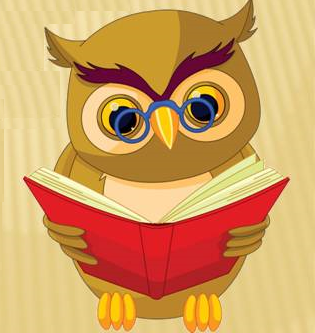
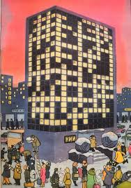

Игры без компьютера
Правила создания кроссвордов
1.Определитесь с размером сетки. Если вы хотите составить обычный, стандартный кроссворд, то вам следует придерживаться конкретных размеров. Если же вы составляете более свободный кроссворд, то размер может быть любым.
 2. Составьте список слов для своего кроссворда. Обычно слова следует подбирать в соответствии с заданной темой. Тема или намек на нее может выступать заголовком кроссворда.
3. Расположите слова в формате сетки. Завершив расположение слов, заштрихуйте все неиспользованные клетки. Не нужно переживать о написании имен собственных с большой буквы, поскольку кроссворды обычно заполняются большими печатными буквами. Также в ответах не должно быть знаков пунктуации.
4. Пронумеруйте первую клетку каждого слова. Начинайте с левого верхнего угла кроссворда и разделяйте слова согласно расположению по вертикали или горизонтали, чтобы у вас получалось «1 по вертикали», «1 по горизонтали» и так далее.
5. Сделайте копию кроссворда. В этот раз первые клетки каждого слова должны быть пронумерованы, но оставаться незаполненными. Отложите заполненную сетку, чтобы использовать ее в качестве ключа. Сделайте столько копий незаполненных сеток, сколько вам нужно.
6. Придумайте вопросы:
- Начните с простых вопросов. Их обычно называют «быстрыми» или «простыми» вопросами, которые проще всего решить. Например: «Ездовое животное» = КОНЬ.
- Повысьте уровень сложности косвенными вопросами. Обычно в них присутствует определенная метафора или требуется нестандартное мышление. Пример: «Половина танца» = ЧА или КАН (от Ча-ча или Канкан).
- Используйте зашифрованные вопросы. Такие вопросы часто встречаются в специальных «криптических кроссвордах», а в обычных кроссвордах обозначаются вопросительным знаком в конце. Они основаны на игре слов и обычно задействуют несколько уровней решения. В категории криптических вопросов существует множество подвидов.
- Организуйте вопросы в форме списка. Пронумеруйте их согласно расположению ответов в сетке кроссворда. Объедините вопросы для ответов по горизонтали в отдельный блок, расположив их в порядке возрастания номера, а затем проделайте то же самое с вопросами для ответов по вертикали.